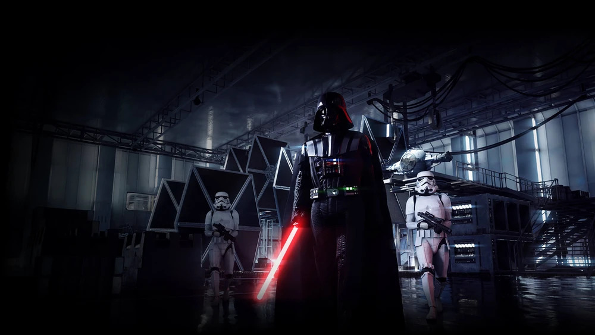
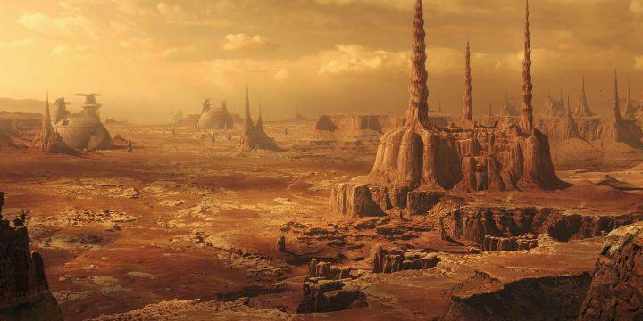
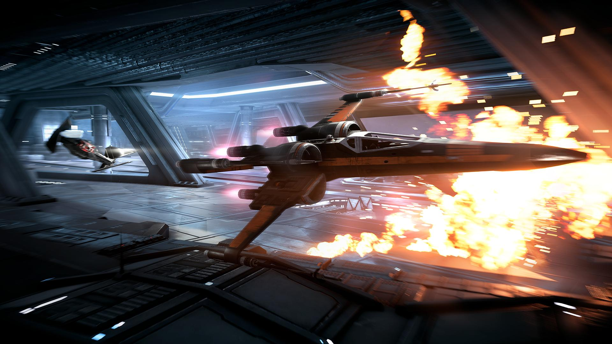

About Battlefront II
Released in 2017 by EA and DICE, Star Wars Battlefront II evolved from a controversial launch into one of the most celebrated Star Wars games ever made. Through years of updates, the game introduced new heroes, maps, and game modes that transformed the player experience.
Main Features
Hero Characters
Play as iconic Star Wars characters including:
- Darth Vader
- Luke Skywalker
- Obi-Wan Kenobi
- Anakin Skywalker
- Yoda
- Kylo Ren

Maps
Battle across famous locations:
- Hoth
- Endor
- Geonosis
- Naboo
- Kamino
- Scarif

Game Modes
- Galactic Assault
- Supremacy
- Heroes vs Villains
- Starfighter Assault
- Co-Op Missions

Why Fans Still Play
Players continue returning because of the game's incredible visuals, authentic Star Wars atmosphere, balanced gameplay, and dedicated community.